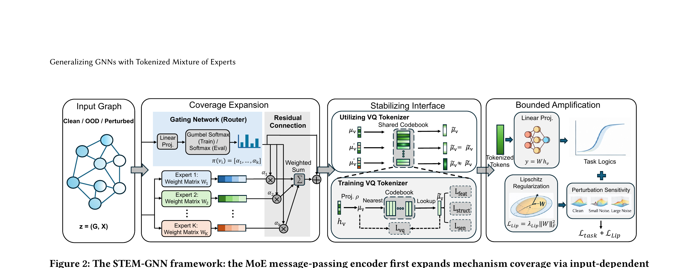

Xiaoguang Guo / 郭晓光
I am a Ph.D. student in Computer Science and Engineering at University of Connecticut (UConn), advised by Prof. Chuxu Zhang. My research focuses on Agentic Reinforcement Learning — I am interested in how to reliably train LLM-based agents that can plan, reason, and act over long horizons in complex interactive environments. I also work on graph learning, with a focus on robustness and safety.
I am open to long-term research collaborations and am currently seeking a Summer 2026 research internship.
Email: mca25001 [AT] uconn.edu

News
- May 2025 - Joined Machine Intelligence and Data Science (MINDS) Lab at UConn!
Selected Publications
Full list on Google Scholar.

Xiaoguang Guo, Zehong Wang, Jiazheng Li, Shawn Spitzel, Qi Yang, Kaize Ding, Jundong Li, Chuxu Zhang
arXiv preprint, 2026
We propose STEM-GNN, a pretrain-then-finetune framework that achieves a balanced fit–stability–generalization tradeoff for robust graph generalization under frozen deployment.
Xiaoguang Guo, Keyang Yu, Qi Li, Dong Chen
ACM Transactions on Sensor Networks (TOSN), 2025
Xiaoguang Guo, Keyang Yu, Qi Li, Dong Chen
ACM BuildSys, 2024
Services
Journal Reviewer:
ACM Transactions on Intelligent Systems and Technology (ACM TIST)
Transactions on Machine Learning Research (TMLR)
Conference Reviewer:
Pacific-Asia Conference on Knowledge Discovery and Data Mining (PAKDD 2026)
Resource-efficient Learning for the Web Conference (RelWeb@WWW/SIGKDD 2025)